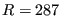
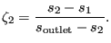
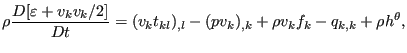
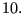
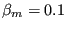

Keyword type: model definition, if structural damping: material
This card is used to define Rayleigh damping for implicit and explicit dynamic calculations (*DYNAMIC) and structural damping for steady state dynamics calculations (*STEADY STATE DYNAMICS).
For Rayleigh damping there are two required parameters: ALPHA and BETA.
Rayleigh damping is applied in a global way, i.e. the damping matrix  is taken to be a linear combination of the stiffness matrix and the mass matrix :
is taken to be a linear combination of the stiffness matrix and the mass matrix :
| (784) |
The damping force satisfies:
|  | (785) |
where  is the velocity vector. For Rayleigh damping only one *DAMPING card can be used in the input deck. It applies to the whole model.
is the velocity vector. For Rayleigh damping only one *DAMPING card can be used in the input deck. It applies to the whole model.
For explicit dynamic calculations only mass proportional damping is allowed, i.e.  must be zero.
For structural damping the damping is a material characteristic. Each material can have its own damping value. There is one required parameter STRUCTURAL, defining the value  of the damping. For structural damping the element damping force is displacement dependent and satisfies:
|  | (786) |
where , is the element stiffness matrix, and is the element displacement vector. is the structural damping value for the material of element  (default is zero). The global damping force is assembled from the element damping forces.
First line:
Example: *DAMPING,ALPHA=5000.,BETA=2.e-3
indicates that a damping matrix is created by multiplying the mass matrix with and adding it to the stiffness matrix multiplied by 
Example: *DAMPING,STRUCTURAL=0.03
defines a structural damping value of 0.03 (3  ). This card must be part of a material description.
). This card must be part of a material description.
Example files: beamimpdy1, beamimpdy2.